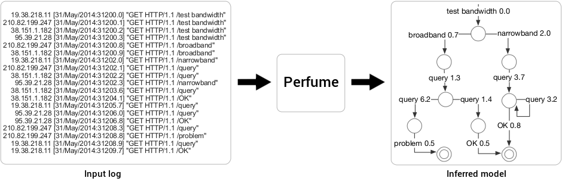

Perfume

Introduction
Perfume summarizes a system's logged executions in a resource-aware,
behavioral model. Resource metrics present in these logs convey vital
information about most systems, yet previous model inference work ignores
resource data. By leveraging this information, Perfume generates more
precise models, which can help developers understand system behavior that
depends on metrics like execution time, network traffic, or energy
consumption.
The example above depicts a log generated by a tool that diagnoses network issues. The tool tests a client's bandwidth, executes a series of queries, and then classifies the network path based on those results. A developer might wish to know what factors cause the tool to report client paths as problematic. While manually examining the log is difficult and unwieldy, the Perfume model reveals that the tool reports a network problem when broadband clients respond slowly to the second query.
The example above depicts a log generated by a tool that diagnoses network issues. The tool tests a client's bandwidth, executes a series of queries, and then classifies the network path based on those results. A developer might wish to know what factors cause the tool to report client paths as problematic. While manually examining the log is difficult and unwieldy, the Perfume model reveals that the tool reports a network problem when broadband clients respond slowly to the second query.
Log Input
Perfume accepts two inputs from the user: an execution log and a set of
regular expressions. The regular expressions are used to parse the log,
allowing Perfume to support a wide variety of log formats. Logs are
parsed into individual execution traces,
events within those traces, and
resource metrics on the events.
The log shown above was parsed with the following regular expressions:
The log shown above was parsed with the following regular expressions:
Events and timestamps:
(?<ip>) .+:(?<DTIME>.+)\] "GET HTTP/1.1 /(?<TYPE>.+)" Separating execution traces:
\k<ip>
(?<ip>) .+:(?<DTIME>.+)\] "GET HTTP/1.1 /(?<TYPE>.+)" Separating execution traces:
\k<ip>
How It Works
To be useful and understandable, Perfume models should be
compact, or contain as few states as possible.
However, a model is useless if it is not also
precise, meaning paths through the model represent
actual or likely executions of the original system. Towards these goals,
Perfume mines temporal, resource-constrained properties that are true
of all executions in the log. The model is then made as compact as
possible while obeying all mined properties, ensuring that it represents
the logged system accurately and concisely.
In the example, one of the properties Perfume mines is:
In other words, whenever problem occurs in an execution trace, broadband always occurs previously in the same trace no less than 8.7 seconds earlier. This property is crucial to understanding the tool's behavior because it differentiates the query events after broadband that lead to problem from those that lead to OK.
One property of Perfume models is that they are guaranteed to accept all execution traces in the input log. But additionally, they are predictive—they can accept traces not present in the input log but likely to be possible in the original system.
In the example, one of the properties Perfume mines is:
broadband always precedes
problem lower-bound 8.7 seconds
In other words, whenever problem occurs in an execution trace, broadband always occurs previously in the same trace no less than 8.7 seconds earlier. This property is crucial to understanding the tool's behavior because it differentiates the query events after broadband that lead to problem from those that lead to OK.
One property of Perfume models is that they are guaranteed to accept all execution traces in the input log. But additionally, they are predictive—they can accept traces not present in the input log but likely to be possible in the original system.
Further Information
Perfume is open source.
Source code:
For Perfume, and separately, the Perfume frontend.
Project contributors include Tony Ohmann, Ivan Beschastnikh, Yuriy Brun, Ryan Stanley, Michael Herzberg, Sebastian Fiss, Armand Halbert, and Marc Palyart.
Source code:
For Perfume, and separately, the Perfume frontend.
Project contributors include Tony Ohmann, Ivan Beschastnikh, Yuriy Brun, Ryan Stanley, Michael Herzberg, Sebastian Fiss, Armand Halbert, and Marc Palyart.
Publications
Tony Ohmann, Ryan Stanley, Ivan Beschastnikh, and Yuriy Brun,
Visually Reasoning about System and Resource Behavior, in Proceedings
of the Demonstrations Track at the International Conference on Software
Engineering (ICSE16), 2016.
Tony Ohmann, Michael Herzberg, Sebastian Fiss, Armand Halbert, Marc Palyart, Ivan Beschastnikh, and Yuriy Brun, Behavioral Resource-Aware Model Inference, in Proceedings of the 26th IEEE/ACM International Conference On Automated Software Engineering (ASE14), 2014.
[ ASE14 supplementary content ]
Tony Ohmann, Kevin Thai, Ivan Beschastnikh, and Yuriy Brun, Mining Precise Performance-Aware Behavioral Models from Existing Instrumentation, in Proceedings of the New Ideas and Emerging Results Track at the International Conference on Software Engineering (ICSE14), 2014, pp. 484–487.
Tony Ohmann, Michael Herzberg, Sebastian Fiss, Armand Halbert, Marc Palyart, Ivan Beschastnikh, and Yuriy Brun, Behavioral Resource-Aware Model Inference, in Proceedings of the 26th IEEE/ACM International Conference On Automated Software Engineering (ASE14), 2014.
[ ASE14 supplementary content ]
Tony Ohmann, Kevin Thai, Ivan Beschastnikh, and Yuriy Brun, Mining Precise Performance-Aware Behavioral Models from Existing Instrumentation, in Proceedings of the New Ideas and Emerging Results Track at the International Conference on Software Engineering (ICSE14), 2014, pp. 484–487.